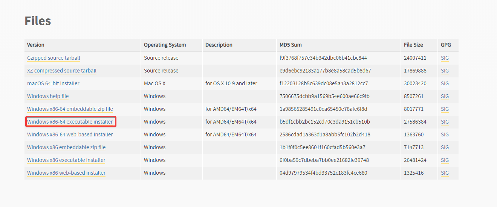
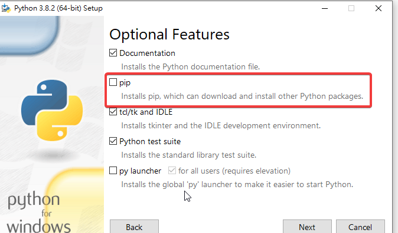
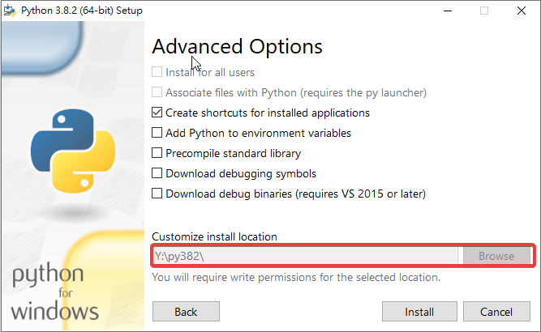
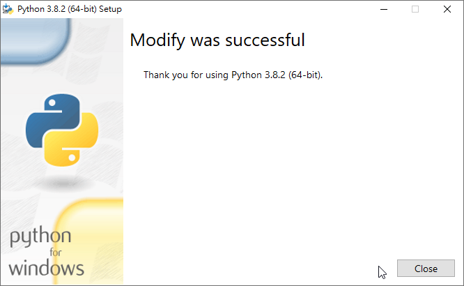
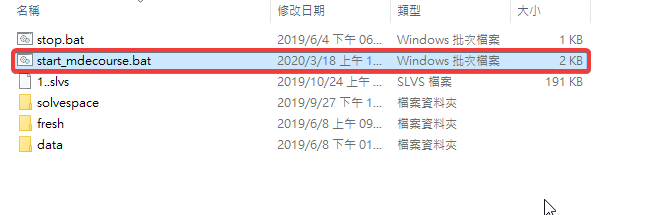

Week <<
Previous Next >> week3
week2
升級python 3.8.2版本
以上為升級python3.8.2之影片
步驟1:
前往python官網並下載指定版本

步驟2:
打開python 3.8.2下載好之檔案，點選customize installation，並按下一步
將pip選項取消掉，按下一步

檔案位置點選Y槽按自己創建出來的空檔按夾P382

並開始安裝

步驟3:
將start.bat抓到SciTe裡編輯檔案位置(原先為p73改成p382)

以下為文字編輯器中的程式碼(為start.bat之內容)
@echo off
set Disk=y
subst %Disk%: "data"
%Disk%:
set HomePath=%Disk%:\home_mdecourse
set HomeDrive=%Disk%:\home_mdecourse
set Home=%Disk%:\home_mdecourse
set USERPROFILE=%Disk%:\home_mdecourse
REM 將系統 Python 程式的 io 設為 utf-8
set PYTHONIOENCODING="utf-8"
set PYTHONPATH=%Disk%:\\DLLs;%Disk%:\py382\Lib;%Disk%:\py382\Lib\site-packages;
set PYTHONHOME=%Disk%:\py382
set path_python=%Disk%:\py382;%Disk%:\py382\Scripts;
set path_msys2=%Disk%:\msys64\mingw64\bin;
REM coreutils is for compiling fossil scm
set path_coreutils=%Disk%:\coreutils-5.3.0\bin;%Disk%:\depends22_x64;
set path_tcc=%Disk%:\tcc;
set path_cmake=%Disk%:\cmake-3.10.1-win64-x64\bin;
set path_nodejs=Disk%:\nodejs;%Disk%:\nodejs\appdata\roaming\npm;
set path_git=%Disk%:\portablegit\bin;
set path_xming=%Disk%:\Xming;
set path_latex=%%Disk%:\Pandoc;%Disk%:\TinyTeX\bin\win32;
path=%Disk%:;%path_python%;%path_msys2%;%path_tcc%;%path_git%;%path_cmake%;%path_coreutils%;
start /MIN cmd.exe
start /MIN cmd.exe
start /MIN cmd.exe
start /MIN cmd.exe
start /MIN %Disk%:\wscite415\wscite\SciTE.exe
start /MIN %Disk%:\wscite415\wscite\SciTE.exe
Exit
步驟4:
完成以上步驟後，按取stop.bat使程式重新讀取
步驟5:
安裝完成後，打入程式碼(pip install 模組名稱)，以安裝剩餘未再啟動程式中的模組
依序安裝順序為
1-flask
2-markdown
3-bcml
4-bs4
5-flask_cors
6-pelican
7-leo
Week <<
Previous Next >> week3